02 / next
Human signal
From a human point cloud into a living network.
Warm paper / vermillionEnter the field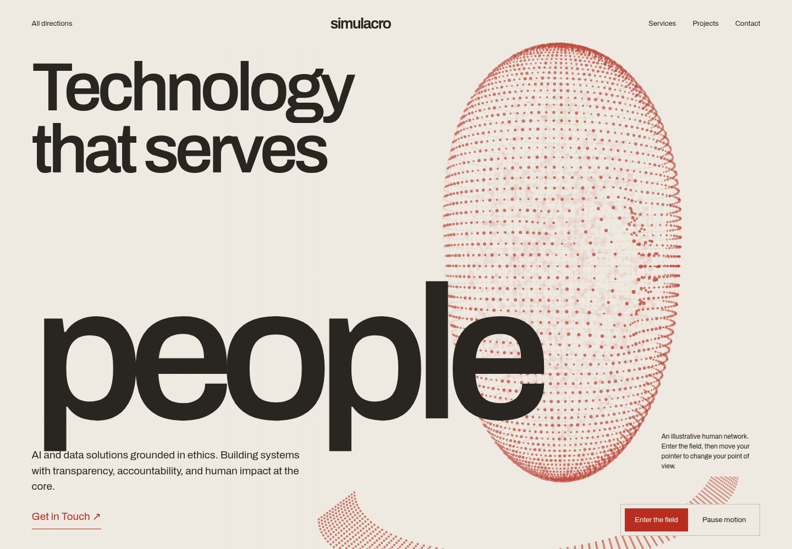
Open interactive pageThree selected directions. Bigger forms, curved camera journeys, and the original Simulacro content.Open a page, move your pointer, then enter its space. Motion is part of the design.
From a human point cloud into a living network.
Warm paper / vermillionEnter the field
Open interactive pageAn architectural knot, seen from within.
Amber / sage / lilacFly through the knot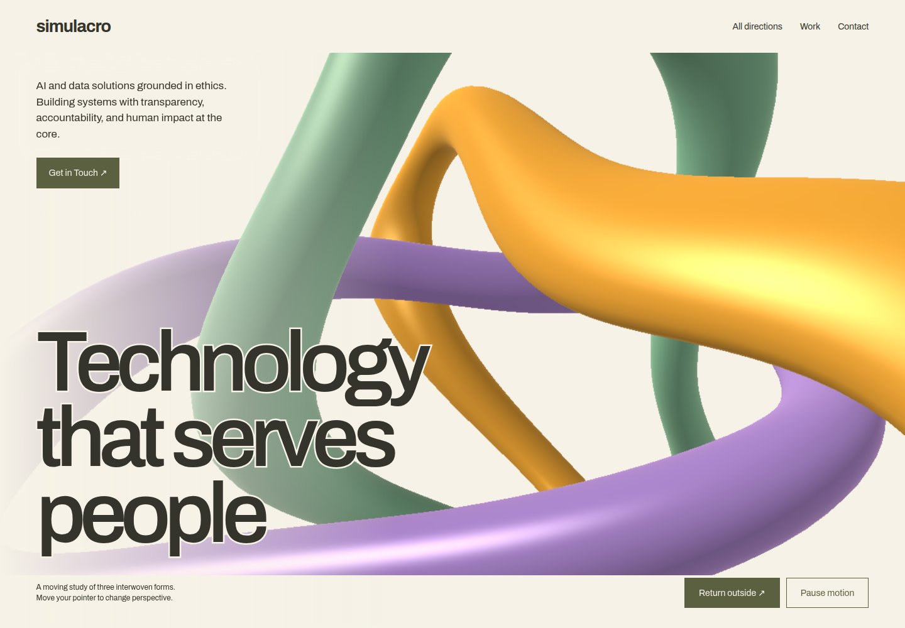
Open interactive pageA curved journey through connected point clusters.
Charcoal / ivory / amberEnter the network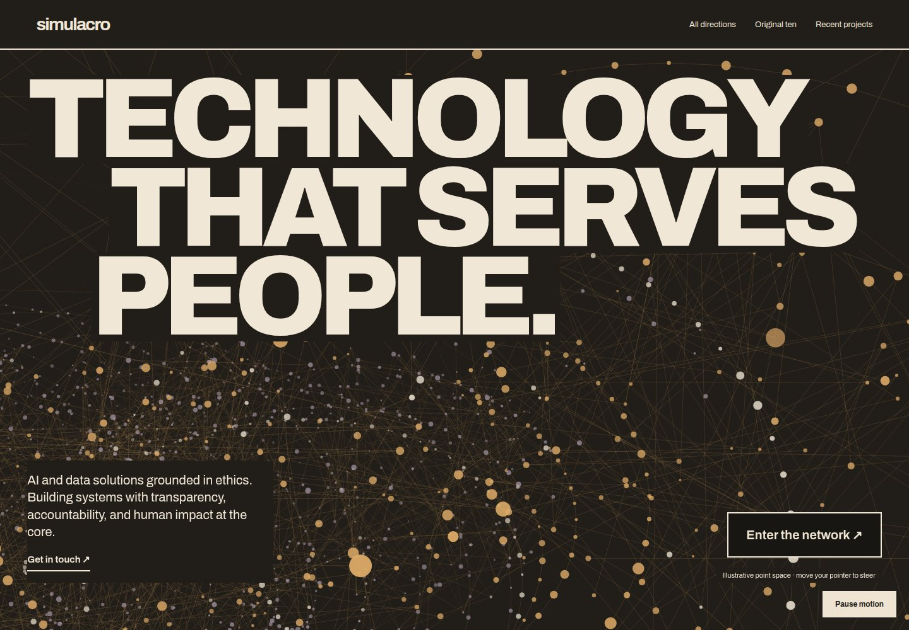
Open interactive pageThe original explorations, kept for comparison.
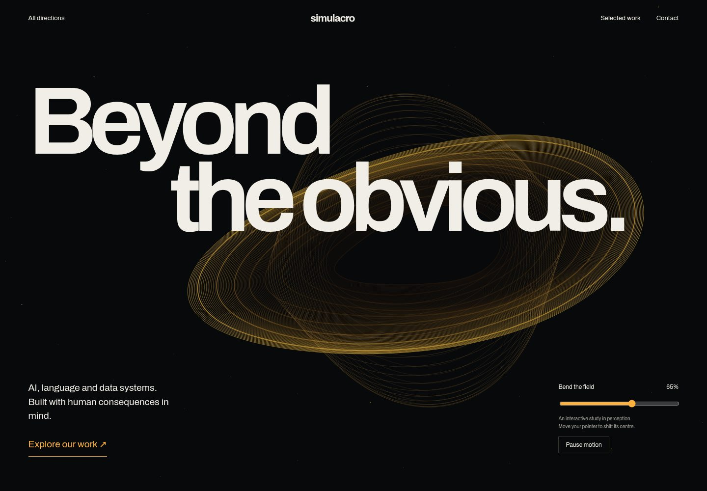
Explore directionGravity, amber, and a field that bends around you.
Try: the gravitational field
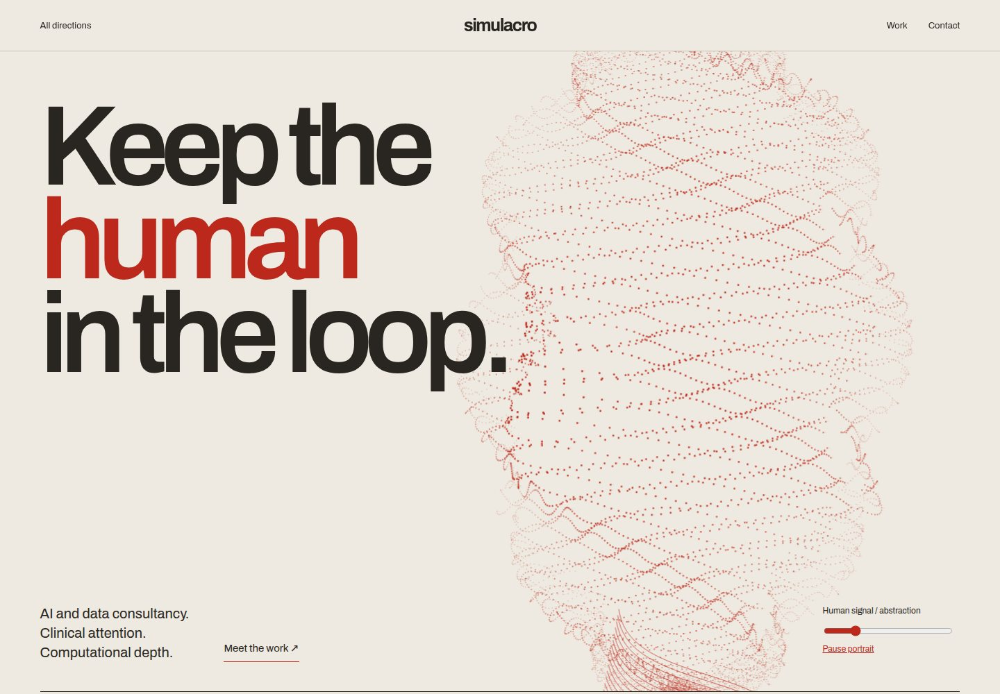
Explore directionA human presence assembled from a computational field.
Try: the point-cloud portrait
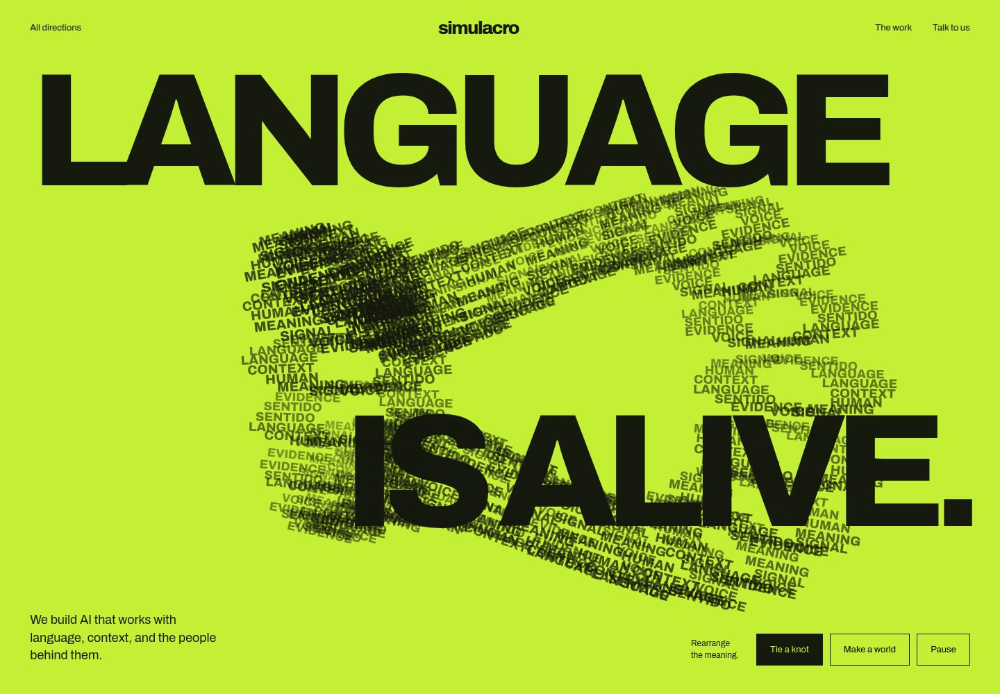
Explore directionWords become material. Meaning becomes architecture.
Try: the kinetic language sculpture
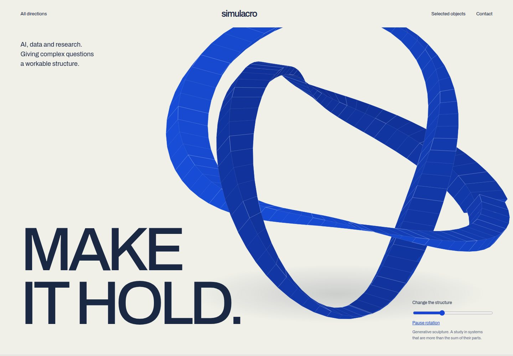
Explore directionResearch takes shape in an impossible architecture.
Try: the impossible sculpture
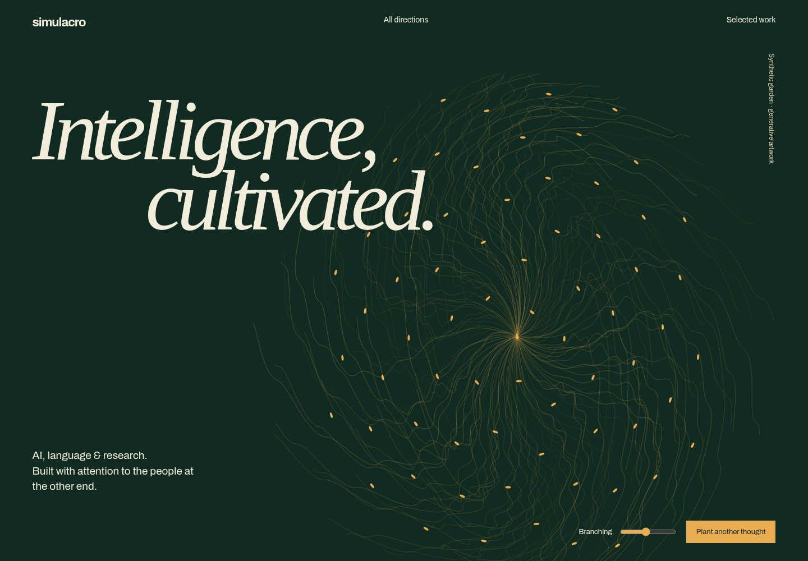
Explore directionA living system of branching, growing intelligence.
Try: the branching specimen
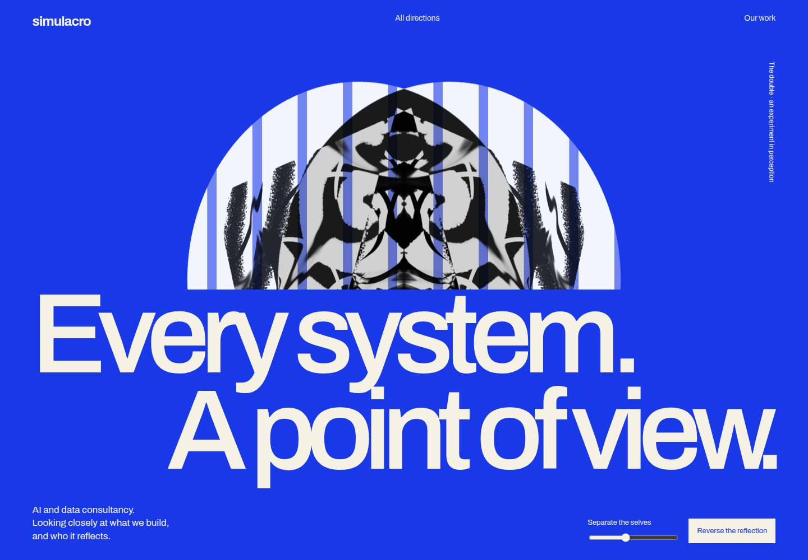
Explore directionPerception, reflection, and the instability of an image.
Try: the reflection stage
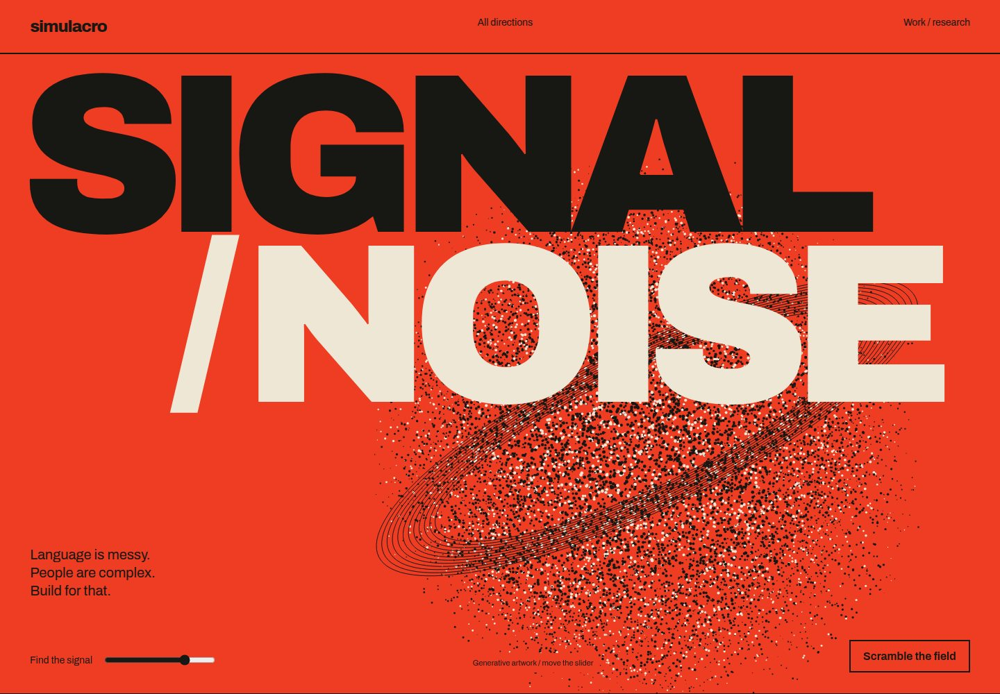
Explore directionA raw raster field resolves into something legible.
Try: the signal-resolution control
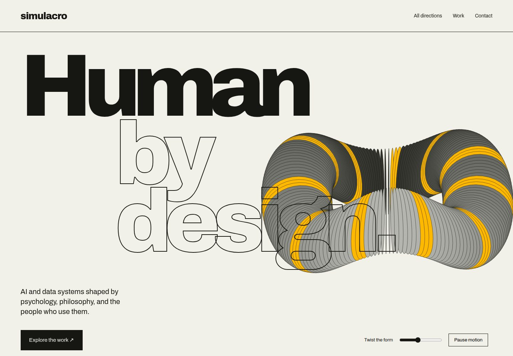
Explore directionMonumental letters. Negative space. Physical typography.
Try: the rotating counterform
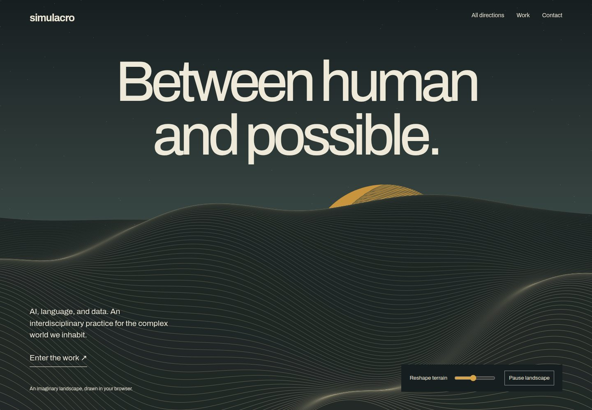
Explore directionAn impossible landscape at the edge of computation.
Try: the generative dream landscape
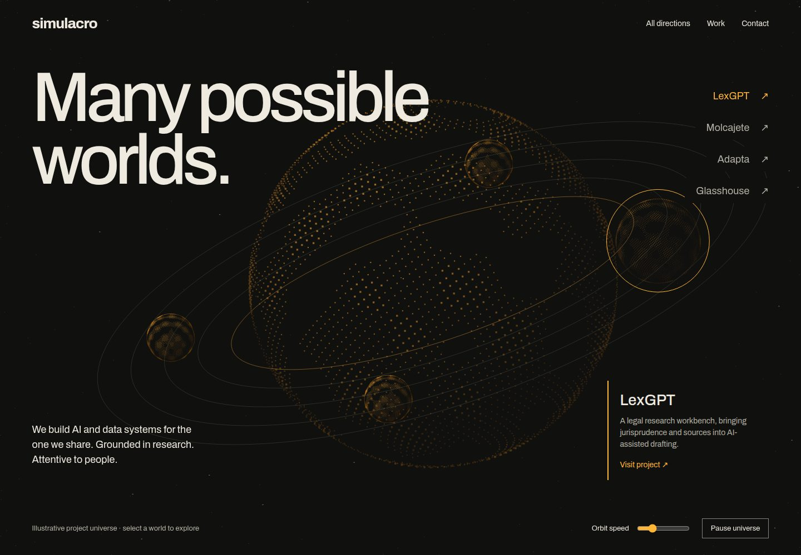
Explore directionA spatial constellation of work, ideas, and inquiry.
Try: the project universe